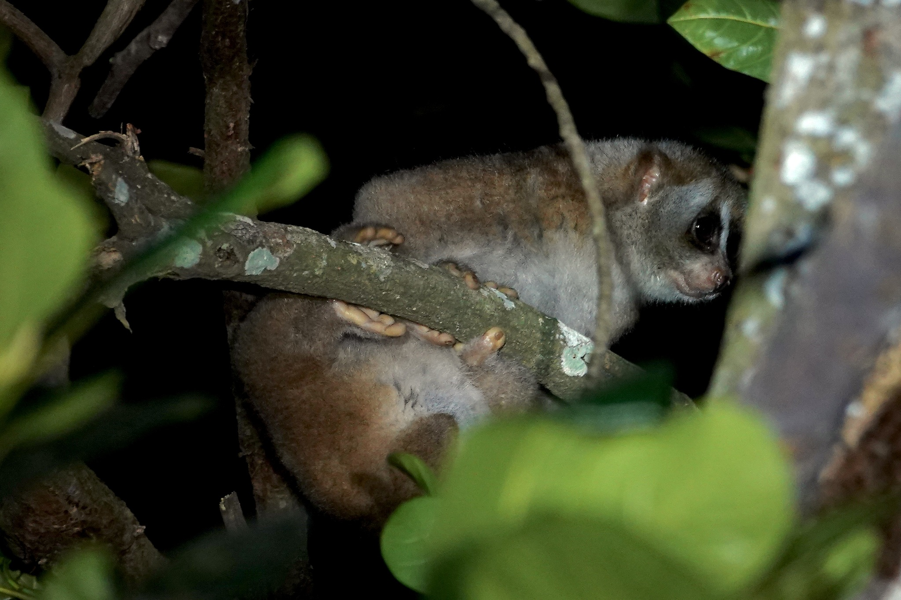
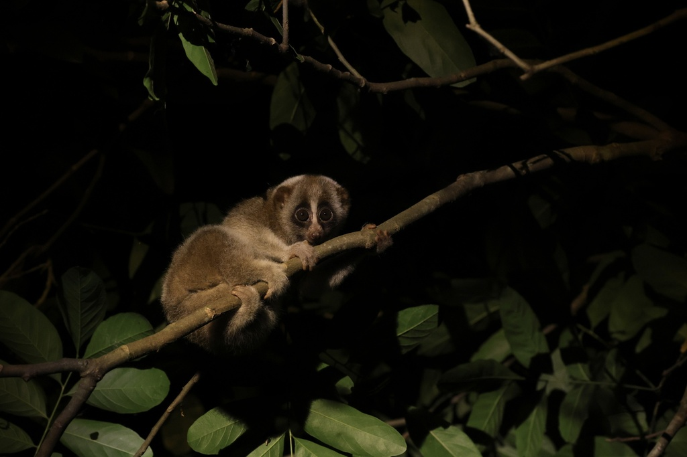
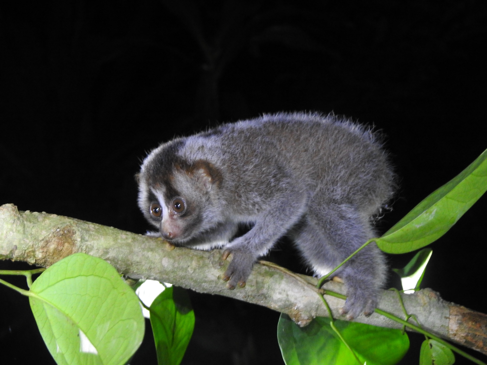
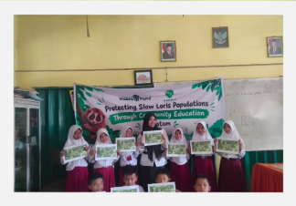
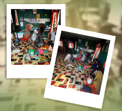

Kukang ada karena hutan, hutan lestari karena kita.
Peta persebaran ilmiah genus Nycticebus di berbagai wilayah Indonesia. Klik penanda untuk detail spesies dan status konservasinya.



Foto: Craig Robson, gwyn0429 & putrahaloho / iNaturalist (CC BY-NC)
Nycticebus coucang (Boddaert, 1785)
Kukang Sunda, yang lazim dikenal oleh masyarakat lokal Sumatera dan Kepulauan Riau dengan sebutan Malu-malu, merupakan primata endemik nokturnal yang sangat unik. Primata bermata besar ini beradaptasi sempurna untuk aktivitas di malam hari, bergerak secara lambat dan hening menyusuri dahan kanopi hutan tropis untuk mencari makan sembari menghindari deteksi para predator alaminya.
Di balik perawakannya yang menggemaskan, kukang menyimpan keunikan biologis yang langka: ia adalah satu-satunya primata berbisa di dunia. Racun pertahanan ini diproduksi melalui kelenjar khusus yang berada di bagian sikunya, yang kemudian dicampur dengan air liur. Gigitan kukang dapat memicu syok anafilaksis yang berbahaya bagi manusia. Di alam liar, satwa pemakan nektar, getah, dan serangga ini memegang peranan krusial sebagai penyerbuk bunga alami di malam hari serta agen penyebar benih yang merawat ekosistem hutan Riau.
Sayangnya, keberadaan primata eksotis ini kian kritis. Kukang Sunda kini berstatus Endangered (Terancam Punah) dalam daftar merah IUCN dan masuk perlindungan ketat CITES Apendiks I. Secara yurisdiksi nasional, satwa ini dilindungi penuh oleh Undang-Undang No. 5 Tahun 1990. Ancaman terbesar yang mendesak populasi mereka saat ini adalah maraknya perburuan liar untuk dijadikan hewan peliharaan, eksploitasi untuk mitos pengobatan tradisional, serta deforestasi yang terus merampas habitat alami mereka.
Inisiatif utama Akasia Riau dan DierenPark Amersfoort Wildlife Fund dalam melindungi populasi satwa liar.
Target Sasaran: Warga desa, pelajar, relawan, pusat komunitas, & pemimpin lokal.
Alur Program:

Mengenal satwa liar sejak dini menjadi salah satu langkah untuk menumbuhkan kepedulian terhadap keberadaannya di alam.
Pada 7 September 2026, edukasi mengenai kukang dilaksanakan bersama 10 siswa SDN 017 Sungai Guntung Hilir. Siswa diajak mengenal kukang, habitatnya, serta alasan penting mengapa kukang perlu dilindungi.
"Jangan menangkap, memelihara, atau memperjualbelikan kukang. Mari bersama menjaga kukang tetap hidup aman di habitat alaminya."

Melalui kegiatan ini, masyarakat diajak mengenal kukang lebih dekat, mulai dari karakteristik, perilaku, hingga ancaman yang dapat membahayakan keberadaannya di alam.
Kegiatan edukasi menjadi salah satu langkah untuk meningkatkan kepedulian dan mendorong upaya penyelamatan kukang bersama.
"Kenali kukangnya, peduli, dan ikut menjaganya tetap di alam."
Update aksi konservasi dan kegiatan lapangan dari akun Instagram @akasia.riau.
Bantu kami menyelamatkan kukang. Data pelapor dijamin kerahasiaannya.